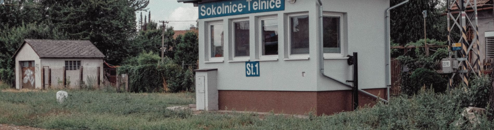
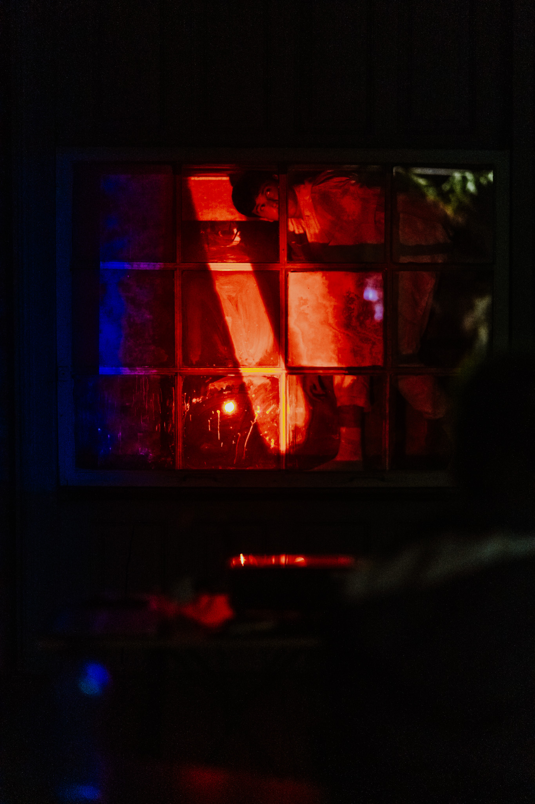

Umělecká a filmová kritika, filmová a divadelní režie, produkce filmových festivalů (freelance)
Autorský, absolventský film na CAS FAMU (in progress)
Samostatná výstava, Galerie Označník, Praha, květen
Uvedení na festivalu ZERO, La Rochelle, Francie
Přednáška v rámci artistic research na konferenci FLUVIALE, ART-Lab Vienna
Uvedení performance, Faktor K, Brno
Role teoretika sympozia, Přibyslav
Uvedení na MFDF Ji.hlava
Uvedení na OFF GRID photo festival, Vídeň
FAMU CAS, Praha
FF MUNI, Brno
FF MUNI, Brno
Výkonná produkce
Asistent produkce
Přednášející a průvodce
Práce v archivu
Pohansko u Břeclavi, FF MUNI

Experimentální krátký dokument, uvedený na MFDF Ji.hlava. Záběr z filmu.

Performance / expanded theatre uvedená v brněnském prostoru Faktor K. Dokumentační fotografie z představení.